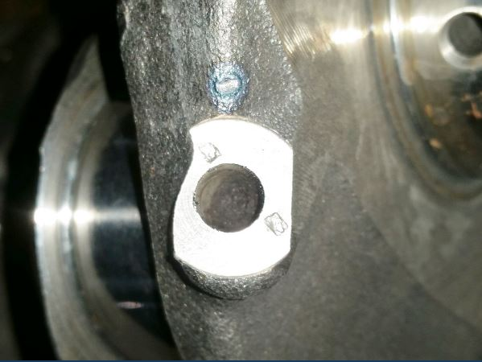

3000GT / Stealth / GTO Blog
Fixing the dreaded ripped out E-brake lever.
The floor is only about .030" thick at the point the captured nuts are attached, so when the shoes get worn, and people start stressing the mounts pulling the lever hard enough to get the brake to hold, eventually you get the above condition...
The quickest and most effective fix is to build some patch plates (preferably slightly thicker than the factory floor) and weld them in. As seen in the below two pics, I've cut out a plate, welded a nut to it, drilled four holes in the corners to facilitate plug welds, then shaped it to fit...
Plug welds are usually easiest to do with a MIG, but being as I didn't want to disassemble the interior, and I certainly didn't want to start it on fire, I opted to do the job with a TIG so that I could control the heat, and not have sparks flying around an unprotected interior. That strategy comes with it's own problems, not the least of which my being far from an expert with a TIG... Laying on the floorboard, operating the pedal with my left knee was stretching my abilities slightly. Getting the fender cover that was padding my right knee stuck in the pedal so the torch wouldn't turn off was fun.... Also TIG requires the work be extremely clean, and any contamination quickly turns things ugly...
The below pics show the front mount installed and painted, the rear mount with the first plug weld, and finally both mounts finished and painted...
Click here to go to link
Fixing the "our fuel pumps don't prime" dilemma
While a non-issue for someone with a well sealed stock fuel system, it's a constant topic of conversation for people that have switched to aftermarket regulators that tend to leak down...
This fix is very easy to do, cheap, and works awesome... I originally came up with it trying to solve the same issue on an older carbureted vehicle that would have an empty carb after sitting for a week or more. Realized the same concept would be perfect in our cars.
If you have a hot wired pump, and some electronic imagination, you could do this with a little less complexity, but the method I'm outlining here can easily be copied, and it doesn't care if you are running a stock pump or hotwired, as long as you are using the stock system to turn it on... It is also pretty non-intrusive, as it pretty much leaves the stock system in place, and piggy backs onto it. Just make sure you use a relay and pigtail that is compatible with the load it will be carrying.
It all hinges around a five pin Bosch style relay, and this very cool little piece of modern electronics:
Multi-Functional 5V-20V Time Delay Relay
They sell them on Amazon and ebay as well. So they shouldn't be hard to find.
First step is to set up your timer. I won't go into the instructions on how to do that, as the manufacturer has that covered, but you do want to configure it to turn on for a short time when powered up, then turn off. (I use 5 seconds, but you can set it up any way you like) Once the timer is configured, I snip the unused trigger wire back and wrap it to the ground wire, then snip the two configuration wires back at slightly different lengths, and wrap them to the output wire:
Once you have a neat little three wire device ready to install, you want to 'T' the power in (red wire) to pin 87 of your relay harness, 'T' the black ground wire into the pin 85 wire of your harness, and run the yellow output to pin 86 of your relay. (ignore the fact that 87/87a are reversed in the below pic, I moved it later)
Now you have a timed relay ready to install... I little electrical tape to tie everything together and you're ready to start putting it in the car:
You're going to install this in the harness at the MPFI. You are going to 'T' the power in wire (Pin 87 of your relay) into the black/white ignition source. You are going to snip the black/blue wire to the fuel pump, and run the MPFI side to pin 87a of your relay, and the fuel pump side to pin 30. You then ground pin 85 of your relay, and you're done...
The hardest part is finding a home to mount the relay... On a late model with the separated MPFI, I was able to just rotate them back and use the free mounting screw. On an early one with the large single MPFI relay you're on your own as I haven't done one yet:
Click here to go to link
Camlock thread
There has been much discussion over the years about the benefits of camlockers when working on our motors... Many won't do the job without them, others say: "real men don't need no @$#%ing camlocks!"
Personally I think they make the job harder than it has to be... When working on cars for a living, time is money. Trying to nail the tension on the belt first try with lockers in the way just turns into a PITA.
But then there's that front cam that always wants to take off... If you're careful, and take your time, you can certainly keep it in check. But if you're trying to get things done, (the time is money thing again...) and you do more than one every 60K you drive your car, it's only a matter of time before it gets away from you. Now most would say "No big deal, just put it back...", which is a reasonable enough theory... What is not considered is Murphy's law, which requires it to take off while you have an appendage in close proximity, turning the front gear into a surprisingly effective meat saw.
Since time is money, and it takes time to stop the job, clean the flesh out of the gear, and hose the blood off of your customer's car, it would seem like a time saver to have something in place to prevent such an occurrence:
In case anyone is wondering, That's just a spare 8mm bolt with a short chunk of 5/16" fuel line shoved over it... You can simply screw it in by hand, it only takes a couple seconds in and out.
Click here to go to link
Tensioner fix
For all of you who lose sleep at night worrying about losing a tensioner, or those of you who throw away a perfectly good tensioner for fear of reusing it even if it only has a few thousand miles on it... Here's your ticket to happiness..
A 1/16" thick flat washer with a 1/4" hole, and little RTV to glue it down and keep it from rattling around...
Now you can install the tensioner in a normal manner, and it could completely fail, and the only thing you'd have to worry about is diagnosing that funny knocking noise in the front of your motor... It can fully retract and you won't have enough slack to let it jump.
Since I was taking pics for this I thought I'd also demonstrate just how much these things move around as the engine warms up... If you've never observed it or thought about it, I think you'll be amazed. (This is also why I won't run a solid tensioner)
Engine cold, initial set up:
After running for about a minute:
Fully warmed up:
Click here to go to link
Let's talk VCU...
Of all the parts on these cars, the viscous coupler stands out as one of the most misunderstood... Is it good, or is it bad? which one is it? how do you test it?
First lets work on how to identify the VCU:
There are two basic design housings; The first design has no thrust surface on either side of the outer housing. The inner sleeve protrudes from both sides approx. 1/4". The second design has a thrust surface built into the outer housing on the left side, so that the sleeve is flush with the housing. In the vast majority of cases, the first design will be an 18 spline unit, and the second design will be a 25 spline unit. (but don't bet the farm on that, because there are some second design 18 spline units floating around)
The primary difference between the two, is that the 18 spline unit has the splines biased toward the left side, with splines all the way to the end of the sleeve. The 25 spline unit has the splines centered in the sleeve. You cannot physically put an 18 spline unit in a 25 spline trans, but care must be taken not to mix them up and put a 25 spline unit in an 18 spline trans.(It will fit in place, but only give you about 1/4" spline engagement to the front diff.)
The following three pics, combined with the previous one, show the differences in the output, sun gear and VCU inner sleeve:
So now we know how to identify it, how do we tell if it's any good..?
The first thing to check is the splines... Excess wear is bad:
Then if you're working on an 18 spline unit, you want to check for excess end clearance. they have a habit of walking the inner sleeve right through the housing. (this is where we find out WHY they re-designed it)
I have a preventative fix for that particular problem:
The next thing you want to check is find out if it's obviously blown. (we'll do a more comprehensive test shortly if it's not obviously junk) Just grab the sun gear, and try to spin the center by hand. If you can easily spin it, we're done, it's now a core to be sent back to your favorite vendor when you buy your rebuilt one...
If you can't turn it by hand, or can barely turn it slowly, we can move on: The next thing we want to check is the seals. The only thing you can check here, is visually look for signs of leakage, and check the grip of the rubber on the inner sleeve. The seals are a large O-ring that when in good condition have significant preload on the seal surface. You check that grip by working the endplay of the inner sleeve back and forth. If it easily rattles around, the seals are most likely hard as rock, and you run the risk of puking the viscous fluid the first time you get it hot. If they show a good resistance to movement then you have a good chance of them continuing to do their job...
So now we get to the meat of the issue.... How do we test one to find out if it's any good? what is good, what is bad? I may disappoint some of you here, I have no intention of telling you where that line is. What I am going to do, is show you how a new unit behaves, and hopefully give you the information you need to make that decision for yourself.
A while back I bought a brand new 18 spline unit, it's never been dipped in gear oil... So I figured it would be the perfect test subject. I stuck it in a vise, and broke out the torque wrenches.
The VCU's job is not to stop movement, but to stop RAPID movement... So the first thing I checked is the actual breakaway torque. I found that at a very slow movement, it took a pretty low 15 ft/lbs to maintain movement. At that pace, it would take well over a full minute to make one revolution. Next I checked the rapid movement torque limiting. This is a bit subjective to how much of a gorilla the guy pulling the torque wrench is, but I found that I could pop 85 ft/lbs with a hard fast pull.
I wanted to get this on video, but it didn't work out as well as I wanted. I only had my phone, and nobody to help me, so they aren't much... The low torque one I pushed the button to turn it off at the end and it kept recording for a couple seconds until I caught it, so you get to look at the floor for a bit..The high torque one just suffers from me trying to hold the phone with one hand, and pop 85 ft/lbs with the other...
Click here to go to link
Why you should always pull the galley balls when servicing a crankshaft.
I was cleaning up and polishing some cranks today... Figured I'd take some pics.
First pic is the gunk packed under the ball completely blocking the galley hole, second pic is that same gunk scraped out onto a piece of paper. The third pic is "most" of the gunk scraped out of the three cranks I cleaned up today..
All three were very clean non spun standard cranks that had been thoroughly cleaned first...

Click here to go to link